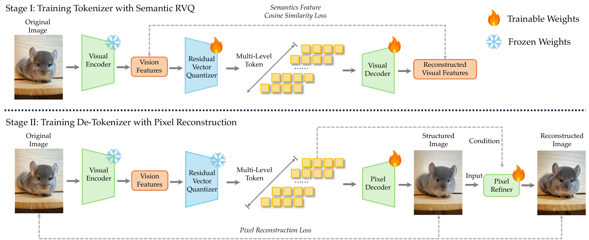

范式问题：抛弃拼接式 any-to-any
当前多模态系统的根本问题是 language-plus-auxiliary——视觉/听觉被当外挂组件，用连续 embedding 投影进 LLM。三类困境：(1) 架构碎片化（每个模态一套 encoder + projection + 模态专属设计堆积）；(2) 理解 vs 生成的对立（CLIP / SigLIP 与 VAE 不可调和）；(3) 基础设施不友好（连续特征流过 LLM 需要 modality-aware 路径）。

图：dNaViT 架构（SAE + 8 级 RVQ）src/assets/dnavit.png
把 text / vision / audio 全部 lexicalize 成离散 token，在单个 decoder-only MoE 上用同一个 NTP 目标统一建模。架构上只剩 decoder-only + tokenizer/detokenizer pair；理解与生成是同一 NTP 的两种 conditioning。
禁用 3D RoPE / 双向 attention / modality-aware MoE——所有 token 走同一条 modality-agnostic 路径。纯 text 训练时每 expert 平均 507 token，多模态后增到 584（capacity 利用率 +15%），部分 expert 自发特化为「视觉 expert」/「音频 expert」。
dNaViT：任意分辨率离散视觉
dNaViT = Discrete Native-resolution Vision Transformer——把任意分辨率图像编码为层级离散 token、并支持从 token 反解图像的统一接口。视觉离散化的难点是 dual bottleneck：编码器的语义容量 + 连续→离散量化的信息损失。
选 Qwen2.5-ViT（28× 空间压缩）作为预量化 SAE——大规模 vision-language 训练后预量化空间已满足 semantic completeness。直接复用，免去从头训练 SAE 的成本。
每级 EMA 更新 codebook（非 gradient descent），Laplace smoothing 防数值不稳；inactive entry（$N_k<1$）从当前 batch 重初始化以维持 codebook 利用率。
Pack-n-Pack 风格的 sequence-based 建模，不同分辨率图像 flatten 进单一序列，用 variable-length FlashAttention 处理。最大序列长 8192，最大分辨率 1736×1736。
400M ViT 像素解码器 + Flow-matching refiner（init from OmniGen2）——在像素解码器输出上做细化提升高频细节。Codebook 冻结后训练，反向恢复空间 patch 序列。